St. Paul Technological Institute of Cavite, Inc.
Learn and grow
at St. Paul TIC.
From Kindergarten to Senior High School, explore what learning looks like on our Dasmariñas campus.
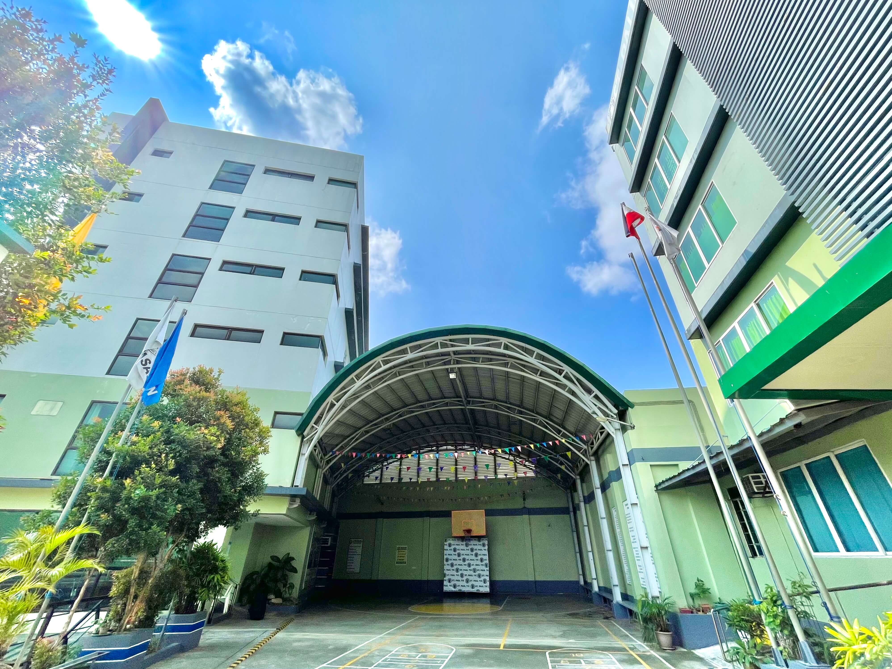
Academic programs
Find your child’s next step, from Kindergarten to Senior High School.

Early years
Kindergarten
Build early learning and social skills through play and classroom activities.

Grades 1–6
Primary School
Develop core skills across the subjects that lay the foundation for high school.
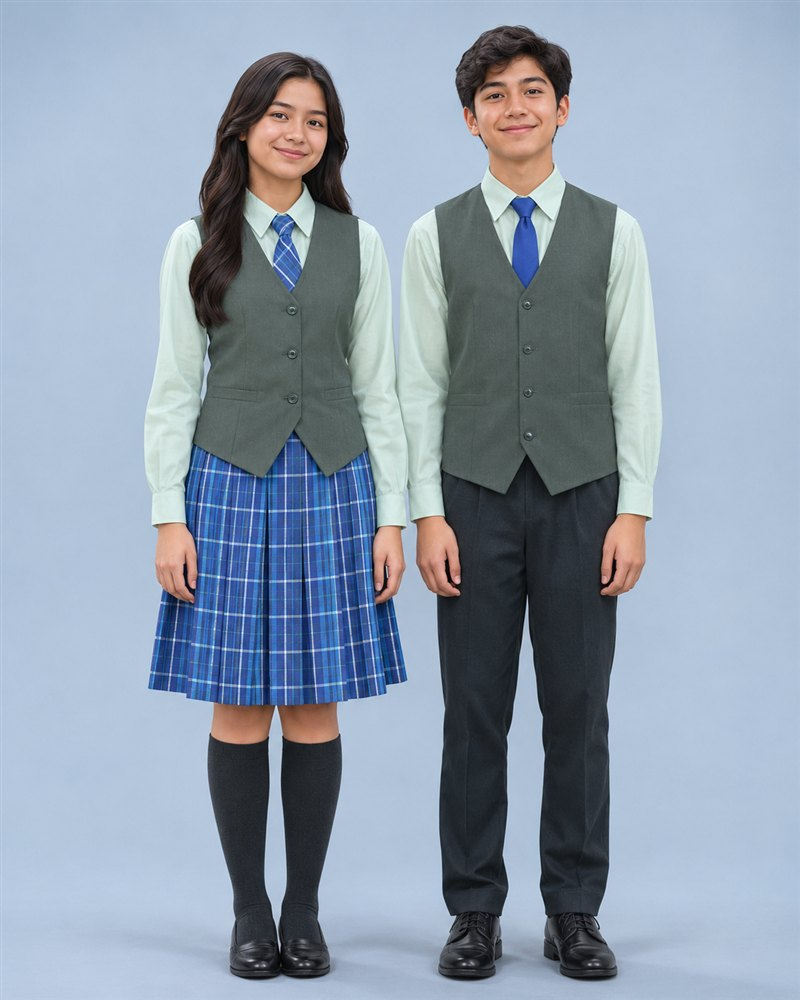
Grades 7–10
Junior High School
Build on core subjects and strengthen thinking and study skills.

Grades 11–12
Senior High School
Choose from ABM, GAS, HUMSS, and STEM.
Explore our campus
Look inside the classrooms, labs, library, and spaces where students learn and spend time together.

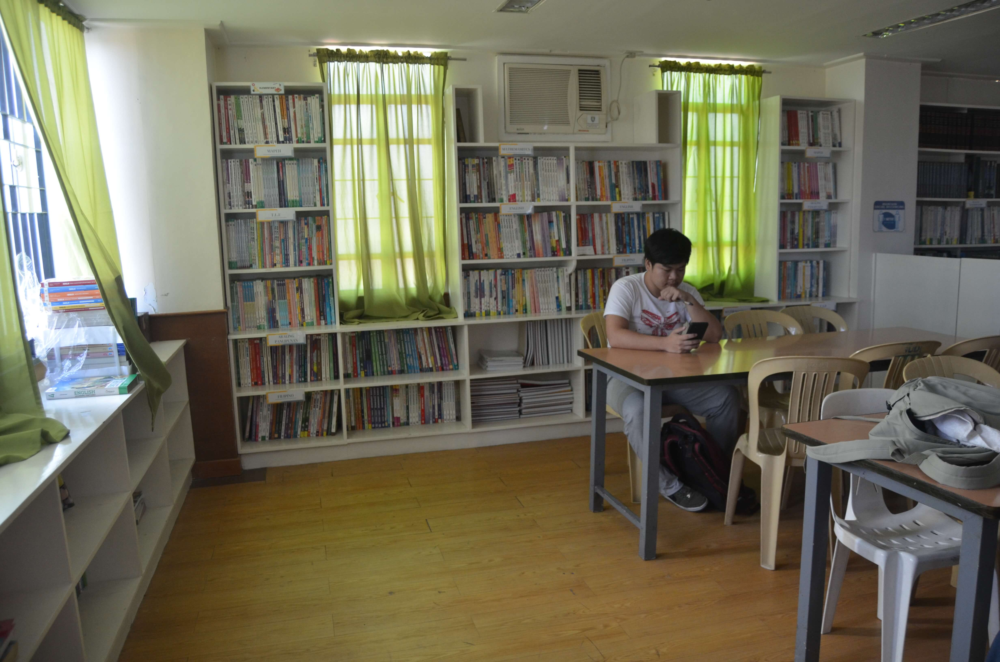
LibraryBuilding 1
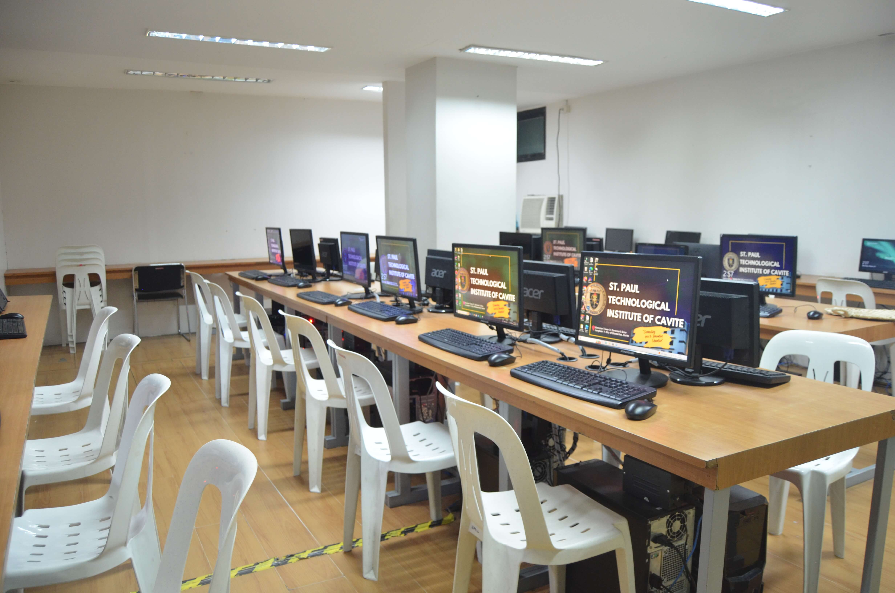
Computer LaboratoryBuilding 2
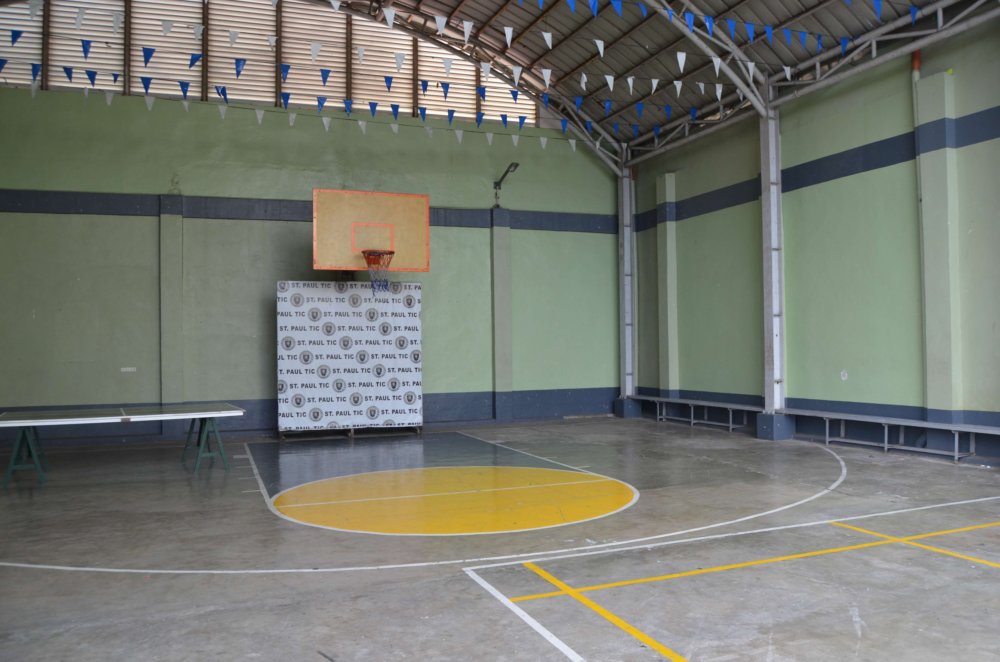
Half Covered CourtGround Level
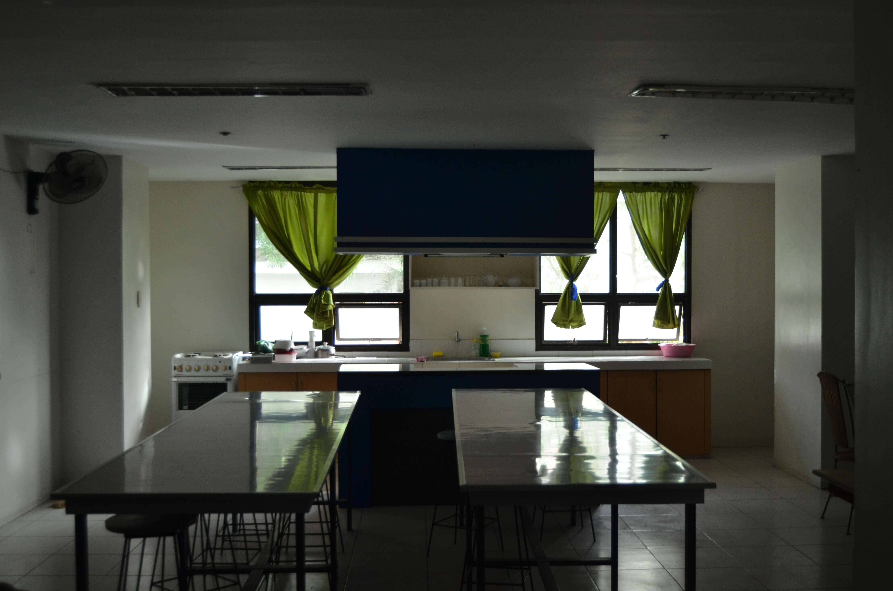
T.L.E RoomGround Level
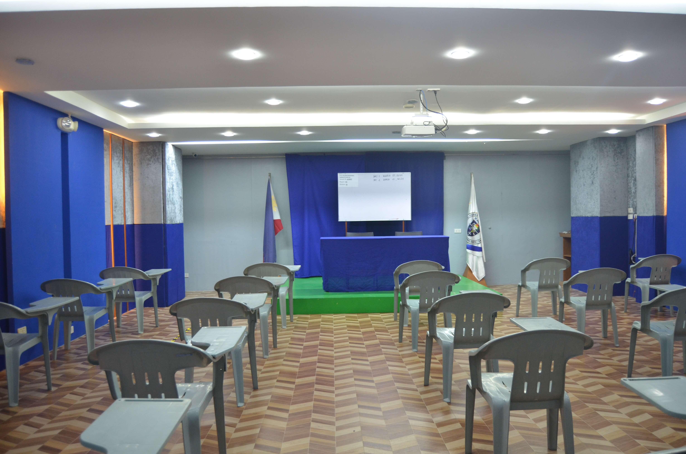
Audio Visual RoomGround Level
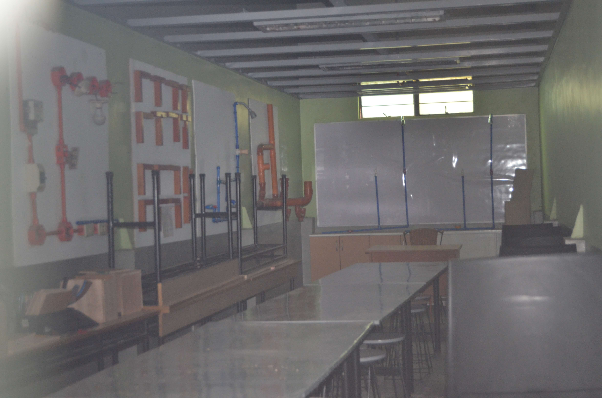
Industrial RoomGround Level
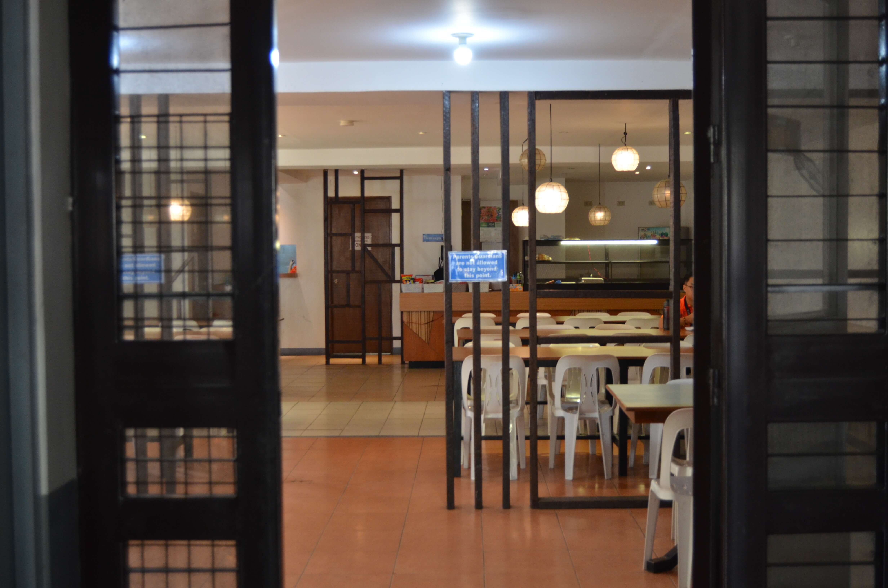
School CafeteriaBuilding 2
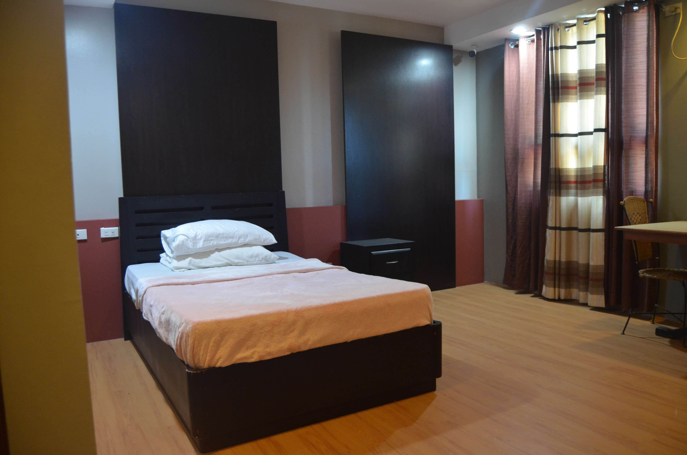
Hotel SuiteBuilding 2
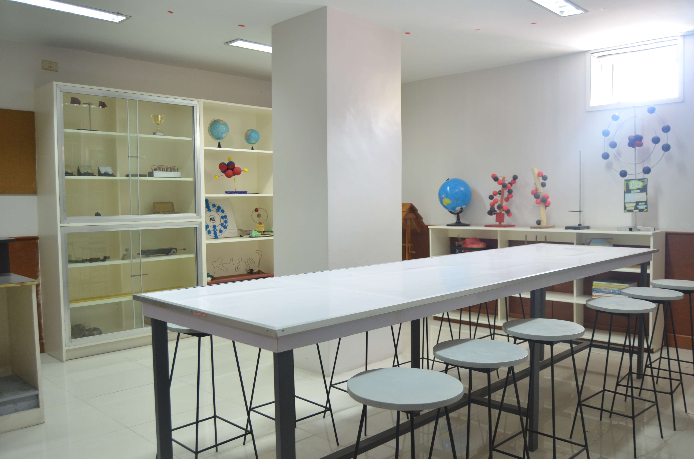
Physics RoomBuilding 2
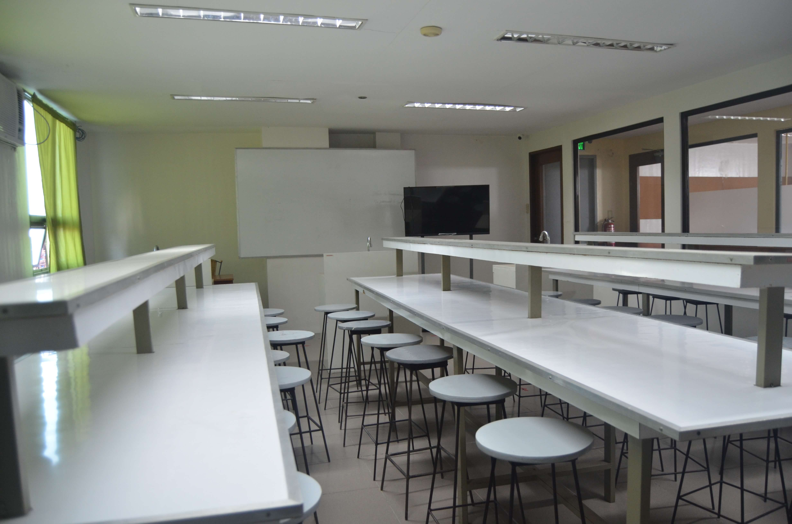
Chemistry LaboratoryBuilding 2
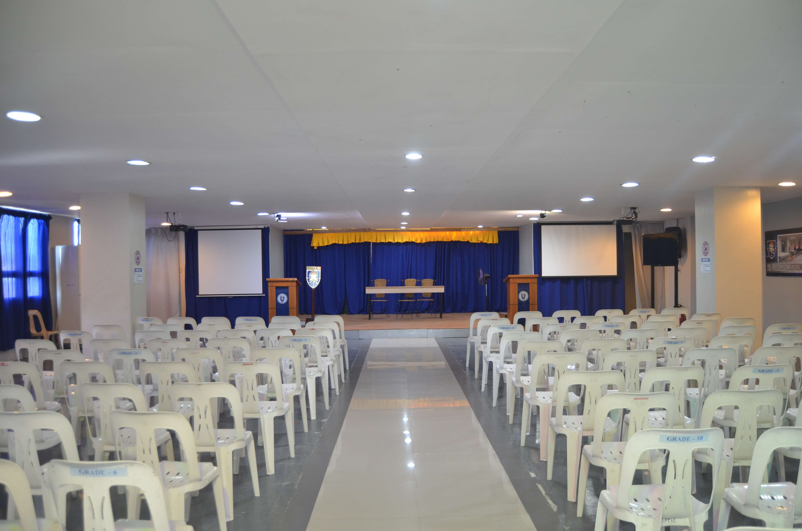
Multi Purpose HallBuilding 2
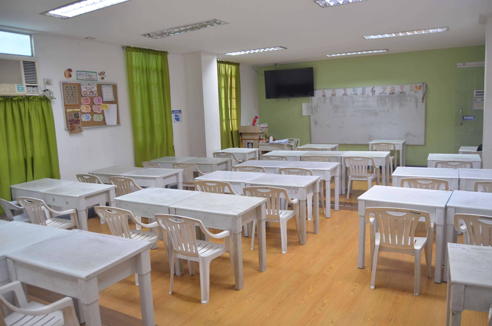
Kindergarten ClassroomBuilding 1 Classroom HallBuilding 1
Classroom HallBuilding 1

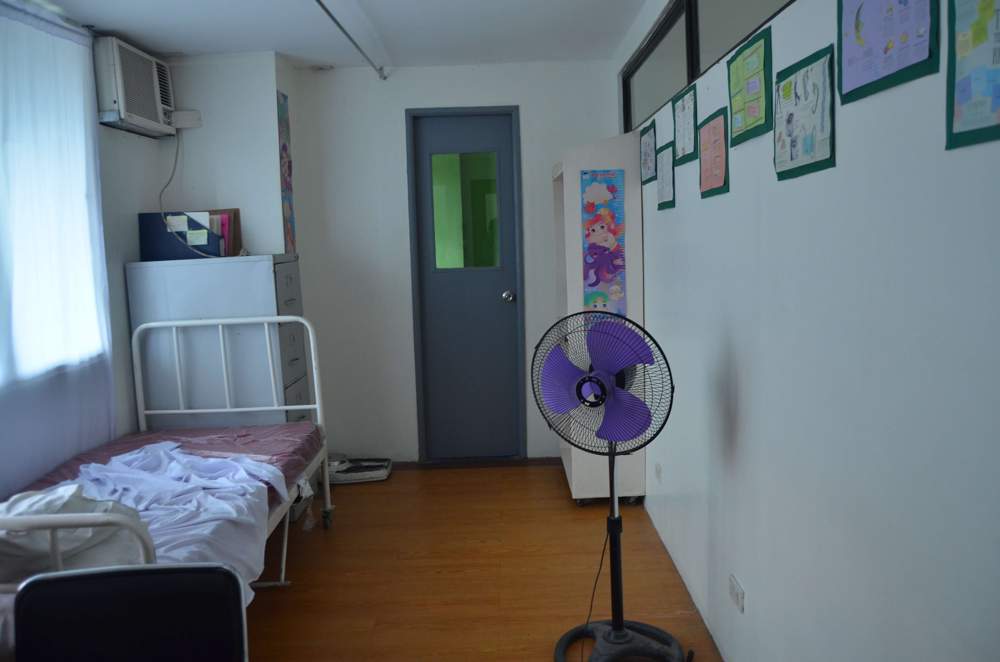
ClinicBuilding 1History
Good education is passport for a bright future but quality education is the foundation of a progressive and successful community.
Originally, St. Paul Technological Institute of Cavite, Inc. was incorporated in the Philippine Securities and Exchange Commission (SEC) on March 3, 2014 to provide technical and vocational education. However, on December 2014, the Articles of Incorporation was amended for the school to focus on basic education program. On January 13, 2015, the school was recognized by the Department of Education to offer Basic Education Program. The school was also granted the temporary order to accept foreign students for all programs before the end of 2015 by the Bureau of Immigration.
Located at Brgy. Langkaan I, along the Governor’s Drive, St. Paul Technological Institute of Cavite, Inc. is a fast growing academic institution in the bustling City of Dasmarinas. On the first school year of its operation (SY 2015-2016), the school has a total of 253 students from Pre-Elementary, Elementary, and Secondary levels. The following school year, the enrolees significantly increased despite of the prevailing economic situation of the country.
The idea of putting up a school is a brainchild of Engr. Nelson Q. Remulla, the major founder of this institution. He is in the business of construction and technical consultancy in the City of Dasmarinas for quite a long time. Seeing the need of the community for an institution that will play a vital role in its development and a haven for knowledge producers that will engineer the future of the province and of the country, he started to conceptualize a learning institution in 2009.
Being a visionary leader and a philanthropist, he envisioned to help the community to produce highly experienced, skilled, and qualified professionals through right and proper education. For him, individuals who are properly trained are urgently needed by this country to address the demands of business and industries. He believes that by integrating moral values with technology and academics, the school will be able to produce students of high calibre.
The school was named after St. Paul the Apostle, one of the most important and influential among all saints in the Roman Catholicism who was considered as the patron of theologians, missions, writers, evangelists, journalists, authors, public workers, rope and saddle makers, tent makers, and the Gentile Christians. Originally, his name was Saul. He is a Roman citizen and a Pharisee who was active in the persecution of early Christians. He also oversee the martyrdom of St. Stephen. But on his way to Damascus, Syria, he experienced a great vision and a spiritual awakening that eventually led to his baptism. He travelled the ancient Christian world to preach about Christianity and established many churches that earned him many critics that eventually led to his imprisonment and later, beheading under the hands of Emperor Nero in 67 CE in Rome. His writings and letters to the early Christian churches served as guide to proper Christian living.
While the school was named after St. Paul, the school remains a non-sectarian school serving all students regardless of their religious affiliation. Following the examples of Apostle Paul, the school embraces the honorable duty of serving the Creator for the greater glory by empowering the people through education and bringing the benefits of quality education to the world.
Vision
To become one of the Philippines’ basic education and technological institutions recognized for producing competent and morally grounded students that are well- equipped to compete on a global scale.
Mission
To that end, St. Paul Technological Institute of Cavite, Inc., commits itself to continuously provide education that integrates innovation, character, patriotism, excellence in the service of humanity, and faith in God;
To promote inclusive, progressive education, which emphasizes experiential learning and essential knowledge and skills to survive and compete in the natural world;
To provide holistic advancement in education through meaningful encounters and immersions;
To encourage school-industry partnership through meaningful technology concepts and ideas;
To provide state-of-the-art facilities for conducting researches and development, and;
To foster international relations and goodwill.
The Paulinian Manifesto
St. Paul Technological Institute of Cavite, Inc., a private school intitution operating under the sanctions and regulations of the Government of the Philippines through the Department of Education do hereby declare and states that:
1. The Paulinian education is the re-creation and re-invention of the past achievements of our people and the people who shared in the development of our nationhood. This is also a corpus of learning drawn from their aspirations and was inspired by their struggles and continuous struggles for identity as a people and self-worth. The Four Wooden Pillars of the School Foundation will remind every Paulinian that there is no future without understanding the past as manifested by its perceived relevance and significance in our present time.
2. The Paulinian education is an education of life and for life which is firmly grounded upon the Four Pillars of Institutional Excellence - leadership in technology and innovation; excellence in the exact language of mathematics; advancement in sciencetific pursuits; and proficiency in the use of English as a unfying language.
3. A Paulinian is a productive member of the apporaching generation and a responsibility facilitator and communicator of knowledge and technology transfers; upon his shoulder rests the responsibility of serving as beacon of innovation by fostering excellence in researcg and innovation; investing in inclusive development; by becoming a reesponsible steward of resources; and in advocating environmental consciousness, preservation, and protection.
4. As an institution, St. Paul Technological Institution of Cavite sends four impotant messages of hope for the future; that the immediate Future of the nation is a collective and shared responsibility of the present and approacting generation; that the Strength of the Nation is the value at which its human capital can set the course of its economy towards stability and sustainability; that the Greatness of a Nation depends on the quality of education and the quantity of those who reap lasting benefits from it; and that the Citizens of the World are the guardians of equal distribution and utilization of the wealth of the nations to eliminate social disparities and economic inequalities.
5. The Paulinians, as a community of educated people, will grow as significant parts of a while; pursue the harmonious balance; preserve and protect the dignity and sanctity of all creations; and magnify to the world the image and qualities of the Supreme Order.
6. That this declaration shall serve as the institutional compass in trailblazing the path towards thge realization of every Filipino's dream of a prosperous and progressive Philippines, with citizens that re globally competitive but are locally responsive, morally-grounded and lives by the national core values of locally responsive, morally-grounded and lives by the national core values of being maka-Diyos, makatao, maka-kalikasan, and makabansa.
four pillars of St. Paul TIC, inc.
These are the four founding principles that guide St. Paul TIC in achieving its goals.
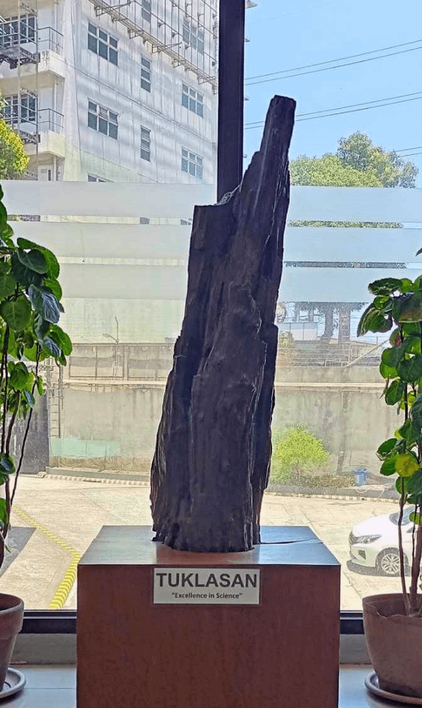
TUKLASAN
Wooden Pillar of Science. It further represents the Four Pillars of Institutional Excellence namely;
-Leadership in Technology and Innovation
-Excellence in the Exact Language of Mathematics
-Advancement in Sciencetific Pursuits
-Proficiency in the Use of English as a Unifying Language.
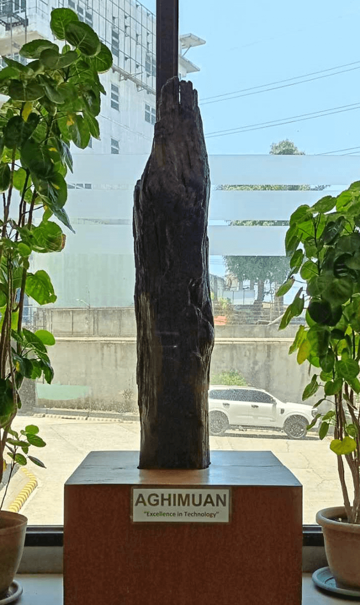
AGHIMUAN
Wooden Pillar of Technology. It further represents the Four Beacons of Innovation namely:
-Fostering Excellence in Research
-Investing in Inclusive Development
-Responsible Utilization of Resources
-Environemental Consciousness, Protection, and Preservation.
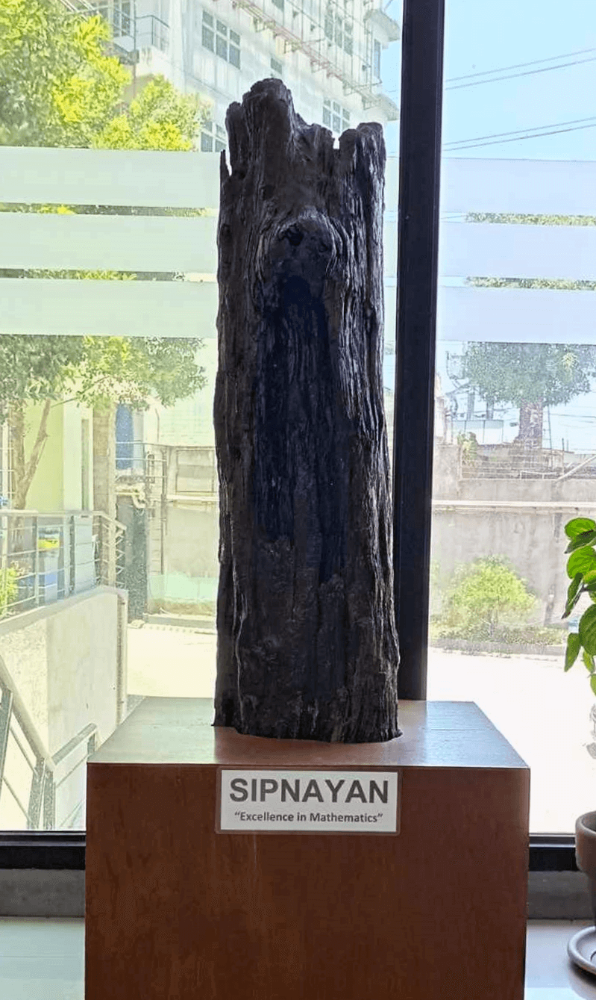
SIPNAYAN
Wooden Pillar of Mathematics. It further represents SPTIC's Four Messages of Hope for the Future:
-The immediate Future of the nation is a collective and shared responsibility of teh present and approaching generation.
-The Strength of the Nation is the value at which its human capital can set the course of its economy towards stability and sustainability.
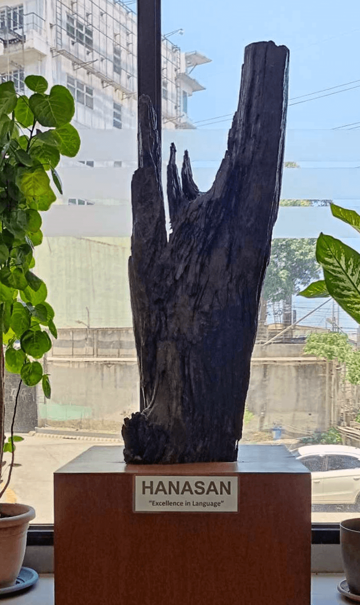
HANASAN
Wooden Pillar of English Proficiency. It further represents the Four FOlds of Paulinian Commitments:
-Commitment to GROW AS A SIGNIFICANT PART OF A WHOLE
-Commitment to PURSUE THE HARMONIOUS BALANCE.
-Commitment to PRESERVE AND PROTECT THE DIGNITY AND SANCTITY OF ALL CREATIONS.
-Commitment to MAGNIFY TO THE WORLD THE IMAGE AND QUALITIES OF THE SUPREME ORDER.
Memorandum
Learn more about our school policy in order to stay informed.
Testimonials
high quality of education.
Great excellent staff Angel and Lena they always help and assist my son Joaquin Asis!!!
Great Teacher! especially our Maam Elsie.. always on time & willing to assist anytime! Always in a good mood😍

School founder
Engr. Nelson Q. Remulla
A businessman, philanthropist, environmentalist, and advocate for education.
About St. Paul TICContact the school
Location:
GT Tower 2 & 3 Governor's Drive, Langkaan 1, City of Dasmarinas, Cavite